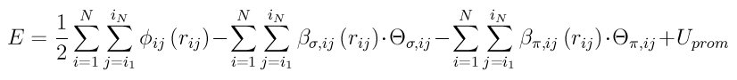

pair_style bop command¶
Syntax¶
pair_style bop keyword ...
zero or more keywords may be appended
keyword = table or save or sigmaoff
table = BOP potential file has tabulated form save = pre-compute and save some values sigmaoff = assume a_sigma = 0
Examples¶
pair_style bop pair_coeff * * ../potentials/CdTe_bop Cd Te pair_style bop table save pair_coeff * * ../potentials/CdTe.bop.table Cd Te Te communicate single cutoff 14.70
Description¶
The bop pair style computes Bond-Order Potentials (BOP) based on quantum mechanical theory incorporating both sigma and pi bondings. By analytically deriving the BOP from quantum mechanical theory its transferability to different phases can approach that of quantum mechanical methods. This particular BOP is extremely effective at modeling III-V and II-VI compounds such as GaAs and CdTe. This potential is similar to the original BOP developed by Pettifor (Pettifor_1, Pettifor_2, Pettifor_3) and later updated by Murdick, Zhou, and Ward (Murdick, Ward).
The BOP potential consists of three terms:
where phi_ij(r_ij) is a short-range two-body function representing the repulsion between a pair of ion cores, beta_(sigma,ij)(r_ij) and beta_(sigma,ij)(r_ij) are respectively sigma and pi bond integrals, THETA_(sigma,ij) and THETA_(pi,ij) are sigma and pi bond-orders, and U_prom is the promotion energy for sp-valent systems.
The detailed formulas for this potential are given in Ward (Ward); here we provide only a brief description.
The repulsive energy phi_ij(r_ij) and the bond integrals beta_(sigma,ij)(r_ij) and beta_(phi,ij)(r_ij) are functions of the interatomic distance r_ij between atom i and j. Each of these potentials has a smooth cutoff at a radius of r_(cut,ij). These smooth cutoffs ensure stable behavior at situations with high sampling near the cutoff such as melts and surfaces.
The bond-orders can be viewed as environment-dependent local variables that are ij bond specific. The maximum value of the sigma bond-order (THETA_sigma) is 1, while that of the pi bond-order (THETA_pi) is 2, attributing to a maximum value of the total bond-order (THETA_sigma+THETA_pi) of 3. The sigma and pi bond-orders reflect the ubiquitous single-, double-, and triple- bond behavior of chemistry. Their analytical expressions can be derived from tight- binding theory by recursively expanding an inter-site Green’s function as a continued fraction. To accurately represent the bonding with a computationally efficient potential formulation suitable for MD simulations, the derived BOP only takes (and retains) the first two levels of the recursive representations for both the sigma and the pi bond-orders. Bond-order terms can be understood in terms of molecular orbital hopping paths based upon the Cyrot-Lackmann theorem (Pettifor_1). The sigma bond-order with a half-full valence band filling. This pi bond-order expression also contains also contains a three-member ring term that allows implementation of an asymmetric density of states, which helps to either stabilize or destabilize close-packed structures. The pi bond-order includes hopping paths of length 4. This enables the incorporation of dihedral angles effects.
The cutoffs for the various interactions are defined in the BOP potential file.
Warning
You must use the communicate cutoff command to insure ghost atoms are acquired at a distance 3x further than the largest BOP cutoff (for a particular pair of elements). E.g. if the BOP cutoff is 4.9 Angstroms, then the ghost atom communication needs to be 14.7 Angstroms or greater as in the example above. This is because the BOP formulation uses neighbors of neighbors of neighbors to enumerate all the required many-body interactions. LAMMPS will generate an error if you do not use an appropriate setting for the communicate cutoff command.
Several options can be specified as keywords with the pair_style command.
The table keyword tells LAMMPS what format the BOP potential file is in. The default is a non-tabulated form. If the table keyword is used, the file is in a tabulated form containing pre-tabulated pair functions for phi_ij(r_ij), beta_(sigma,ij)(r_ij), and beta_(pi,ij)(r_ij). This allows you to use your own functional form for various interactions.
The save keyword gives you the option to calculate and store in advance a set of distances, angles, and derivatives of angles. The default is to not do this, but to calculate the various quantities on-the-fly each time they are needed. The former may be faster, but takes more memory. The latter requires less memory, but may be slower. It is best to test this option to see if it makes a difference on your machine for the specific problem you are modeling.
The sigmaoff keyword optimizes the BOP equations for the case of a_sigma = 0. For some published BOP potentials, a_sigma = 0 and several terms in the BOP equations drop out. If this is the case, specifying sigmaoff will typically speed up the BOP pair style.
Only a single pair_coeff command is used with the bop style which specifies a BOP potential file, with parameters for all needed elements. These are mapped to LAMMPS atom types by specifying N additional arguments after the filename in the pair_coeff command, where N is the number of LAMMPS atom types:
filename
N element names = mapping of BOP elements to atom types
See the pair_coeff doc page for alternate ways to specify the path for the potential file.
As an example, imagine the CdTe.bop file has BOP values for Cd and Te. If your LAMMPS simulation has 4 atoms types and you want the 1st 3 to be Cd, and the 4th to be Te, you would use the following pair_coeff command:
pair_coeff * * CdTe Cd Cd Cd Te
The 1st 2 arguments must be * * so as to span all LAMMPS atom types. The first three Cd arguments map LAMMPS atom types 1,2,3 to the Cd element in the BOP file. The final Te argument maps LAMMPS atom type 4 to the Te element in the BOP file. If a mapping value is specified as NULL, the mapping is not performed. This can be used when a bop potential is used as part of the hybrid pair style. The NULL values are placeholders for atom types that will be used with other potentials.
BOP files in the potentials directory of the LAMMPS distribution have a “.bop” or “.bop.table” suffix, depending on whether they are of the non-tabulated or tabulated form, as described above.
The parameters/coefficients format for the both kinds of BOP files are given below with variables matching the formulation of Ward (Ward). Each header line containing a “:” is preceded by a blank line.
Line 1: elements: (header)
Line 2: #elements N
The first two lines are followed by N lines containing the atomic number and mass of each element.
Non-tabulated potential file format:
Following the definition of the elements is the block of global variables for spline and quadratic fits of THETA_(S,ij) and its components THETA_0, THETA_1, and S.
Line 1: global: (header)
Line 2: delta_1-delta_7 (if all are not used in the particular formulation, set unused values to 0.0)
Line 3: ncutoff, r_big, r_small (r_big and r_small are parameters for pairwise parameters gamma typically set to 0.99 and 0.01, respectively)
Line 4: which, alpha, nfunc (these are options for the spline which=1.0 (means using a smooth function); which=2.0 (spline), alpha is a parameter in the spline, nfunc is the type of GSP function (f_ij) (nfunc=1 is the published equation from Ward (Ward); nfunc=2 f_ij(r_ij)=exp(n_ij*r_ij); nfunc=3 f_ij(r_ij)=1/(r_ij)^(n_ij)).
Line 5: alpha_1, beta_1, gamma_1 (alpha_1=first coefficient for THETA_0; beta_1=first exponent for THETA_0; gamma_1=second exponent for THETA_0)
Line 6: alpha_2, beta_2 (alpha_2=second coefficient for S; beta_2=first exponent for S)
Line 7: alpha_3, beta_3 (alpha_3=first coefficient for THETA_1; beta_3=second coefficient for THETA_1)
The next block contains constants for the environment depend promotional energy for sp-valent systems, each of which are species dependent. Refer to Pettifor (Pettifor_3) for constant definitions. As well as one species dependent parameter p_pi.
Line 1: ptrs: (header)
Following the ptrs header there are N lines for e_1-e_N containing (A_ij)^(mu*nu), delta^mu, p_pi
Line 2: (A_ij)^(mu*nu), delta^mu, p_pi (for e_1)
Line 3: (A_ij)^(mu*nu), delta^mu, p_pi (for e_2 and continues to e_N)
The next block contains constants for the pair interactions.
Line 1: pairs: (header)
Following the header the block contains a series of constants for the number of pair interaction types, the block will be broken up into parameters for e_i-e_j with i=0->N, j=i->N. Each single interaction section for this block will contain (see Ward for parameter definitions):
Line 2: r_0, r_c, r_1, r_cut (for e_1-e_2 interactions)
Line 3: m, n, n_c
Line 4: phi_0, beta_(sigma,0), beta_(pi,0)
Line 5: a_sigma, c_sigma, delta_sigma (From complete formulation of 1/2 full valance shell for this particular formulation delta_sigma=0)
Line 6: a_pi, c_pi, delta_pi
Line 7: f_sigma, k_sigma, delta_3 (This delta_3 is similar to that of the previous section but is interaction type dependent)
Line 8: r_0, r_c, r_1, r_cut (for e_1-e_2 interactions and repeats as above)
The next block contains tris.
Line 1: tris: (header)
Following the header there is a line for each three body interaction types as e_j-e_i-e_k with i->N, j->N, k=j->N
Line 2: g_sigma0, g_sigma1, g_sigma2 (these are coefficients for g_(sigma,ijk)(theta_ijk) for e_1-e_1-e_1 interaction. Ward contains the full expressions for the constants as functions of b_(sigma,ijk), p_(sigma,ijk), u(sigma,ijk)
Line 3: g_sigma0, g_sigma1, g_sigma2 (for e_1-e_1-e_2)
This would be the end of the potential parameter file without pre- tabulated data.
Tabulated potential file format:
The parameters/coefficients format for the BOP potentials input file containing pre-tabulated functions of is given below with variables matching the formulation of Ward (Ward).
Line 1: # elements N
The first two lines are followed by N lines containing the atomic number and mass of each element THETA_0 and THETA_1 (see Ward).
Following the definition of the elements several global variables for the tabulated functions are given.
Line 1: nr, nBOt (nr is the number of divisions the radius is broken into for function tables and MUST be a factor of 5; nBOt is the number of divisions for the tabulated values of THETA_(S,ij)
Line 2: delta_1-delta_7 (if all are not used in the particular
formulation, set unused values to 0.0)
Following this N lines for e_1-e_N containing p_pi.
Line 3: p_pi (for e_1)
Line 4: p_pi (for e_2 and continues to e_N)
The next section contains several pair constants for the number of interaction types e_i-e_j, with i=1->N, j=i->N
Line 1: r_cut (for e_1-e_1 interactions)
Line 2: c_sigma, a_sigma, c_pi, a_pi
Line 3: delta_sigma, delta_pi
Line 4: f_sigma, k_sigma, delta_3 (This delta_3 is similar to that of the previous section but is interaction type dependent)
The next section contains a line for each three body interaction type e_j-e_i-e_k with i=0->N, j=0->N, k=j->N
Line 1: g_(sigma0), g_(sigma1), g_(sigma2) (These are coefficients for g_(sigma,jik)(THETA_ijk) for e_1-e_1-e_1 interaction. Ward contains the full expressions for the constants as functions of b_(sigma,ijk), p_(sigma,ijk), u_(sigma,ijk))
Line 2: g_(sigma0), g_(sigma1), g_(sigma2) (for e_1-e_1-e_2)
The next section contains a block for each interaction type for the phi_ij(r_ij). Each block has nr entries with 5 entries per line.
Line 1: phi(r1), phi(r2), phi(r3), phi(r4), phi(r5) (for the e_1-e_1 interaction type)
Line 2: phi(r6), phi(r7), phi(r8), phi(r9), phi(r10) (this continues until nr)
…
Line nr/5_1: phi(r1), phi(r2), phi(r3), phi(r4), phi(r5), (for the e_1-e_1 interaction type)
The next section contains a block for each interaction type for the beta_(sigma,ij)(r_ij). Each block has nr entries with 5 entries per line.
Line 1: beta_sigma(r1), beta_sigma(r2), beta_sigma(r3), beta_sigma(r4), beta_sigma(r5) (for the e_1-e_1 interaction type)
Line 2: beta_sigma(r6), beta_sigma(r7), beta_sigma(r8), beta_sigma(r9), beta_sigma(r10) (this continues until nr)
…
Line nr/5+1: beta_sigma(r1), beta_sigma(r2), beta_sigma(r3), beta_sigma(r4), beta_sigma(r5) (for the e_1-e_2 interaction type)
The next section contains a block for each interaction type for beta_(pi,ij)(r_ij). Each block has nr entries with 5 entries per line.
Line 1: beta_pi(r1), beta_pi(r2), beta_pi(r3), beta_pi(r4), beta_pi(r5) (for the e_1-e_1 interaction type)
Line 2: beta_pi(r6), beta_pi(r7), beta_pi(r8), beta_pi(r9), beta_pi(r10) (this continues until nr)
…
Line nr/5+1: beta_pi(r1), beta_pi(r2), beta_pi(r3), beta_pi(r4), beta_pi(r5) (for the e_1-e_2 interaction type)
The next section contains a block for each interaction type for the THETA_(S,ij)((THETA_(sigma,ij))^(1/2), f_(sigma,ij)). Each block has nBOt entries with 5 entries per line.
Line 1: THETA_(S,ij)(r1), THETA_(S,ij)(r2), THETA_(S,ij)(r3), THETA_(S,ij)(r4), THETA_(S,ij)(r5) (for the e_1-e_2 interaction type)
Line 2: THETA_(S,ij)(r6), THETA_(S,ij)(r7), THETA_(S,ij)(r8), THETA_(S,ij)(r9), THETA_(S,ij)(r10) (this continues until nBOt)
…
Line nBOt/5+1: THETA_(S,ij)(r1), THETA_(S,ij)(r2), THETA_(S,ij)(r3), THETA_(S,ij)(r4), THETA_(S,ij)(r5) (for the e_1-e_2 interaction type)
The next section contains a block of N lines for e_1-e_N
Line 1: delta^mu (for e_1)
Line 2: delta^mu (for e_2 and repeats to e_N)
The last section contains more constants for e_i-e_j interactions with i=0->N, j=i->N
Line 1: (A_ij)^(mu*nu) (for e1-e1)
Line 2: (A_ij)^(mu*nu) (for e1-e2 and repeats as above)
Mixing, shift, table tail correction, restart:
This pair style does not support the pair_modify mix, shift, table, and tail options.
This pair style does not write its information to binary restart files, since it is stored in potential files. Thus, you need to re-specify the pair_style and pair_coeff commands in an input script that reads a restart file.
This pair style can only be used via the pair keyword of the run_style respa command. It does not support the inner, middle, outer keywords.
Restrictions¶
These pair styles are part of the MANYBODY package. They are only enabled if LAMMPS was built with that package (which it is by default). See the Making LAMMPS section for more info.
These pair potentials require the newtion setting to be “on” for pair interactions.
The CdTe.bop and GaAs.bop potential files provided with LAMMPS (see the potentials directory) are parameterized for metal units. You can use the BOP potential with any LAMMPS units, but you would need to create your own BOP potential file with coefficients listed in the appropriate units if your simulation does not use “metal” units.
Default¶
non-tabulated potential file, a_0 is non-zero.
(Pettifor_1) D.G. Pettifor and I.I. Oleinik, Phys. Rev. B, 59, 8487 (1999).
(Pettifor_2) D.G. Pettifor and I.I. Oleinik, Phys. Rev. Lett., 84, 4124 (2000).
(Pettifor_3) D.G. Pettifor and I.I. Oleinik, Phys. Rev. B, 65, 172103 (2002).
(Murdick) D.A. Murdick, X.W. Zhou, H.N.G. Wadley, D. Nguyen-Manh, R. Drautz, and D.G. Pettifor, Phys. Rev. B, 73, 45206 (2006).
(Ward) D.K. Ward, X.W. Zhou, B.M. Wong, F.P. Doty, and J.A. Zimmerman, Phys. Rev. B, 85,115206 (2012).